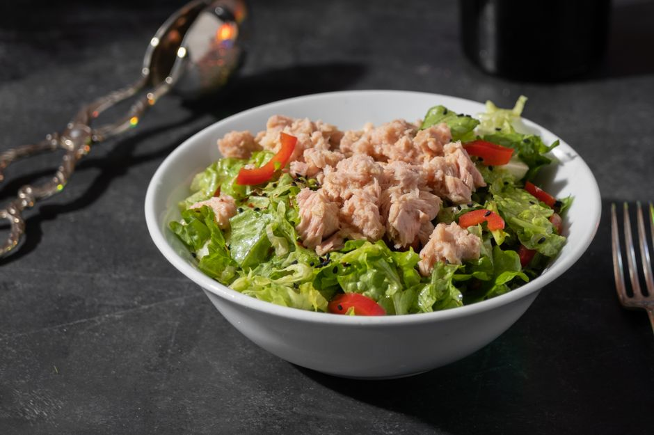

Sustitutos naturales para ahorrar en los platos diarios

Photo: Tuğba ÖZTÜRK / Pexels
Cocinar con poco presupuesto no significa comer peor. Unas cuantas sustituciones inteligentes reducen la factura del supermercado sin perder sabor ni equilibrio. Estas son sustituciones útiles y algunas que no vale la pena arriesgar.
1. Cambia ingredientes caros por básicos baratos
Las hierbas secas suelen costar menos que las frescas y duran meses. Usa aproximadamente un tercio de hierba seca respecto a la fresca. Las legumbres pueden sustituir parte de la carne en guisos, tacos y salsas para pasta.
2. Elige verduras congeladas o en conserva
Las verduras congeladas se recolectan y congelan rápido, duran meses y desperdician menos. Los tomates y las legumbres en conserva son baratos y prácticos. Enjuaga las legumbres en conserva antes de usarlas.
3. Usa yogur natural y leche en más recetas
El yogur natural puede reemplazar la crema agria o la mayonesa en aderezos y salsas. La leche con unas gotas de limón o vinagre sirve como sustituto del suero de leche en muchas recetas de repostería.
4. Prepara tus propias salsas y aderezos
Una salsa de tomate sencilla con tomate en conserva, cebolla, ajo y sal sale más barata que la de bote y se congela bien. Una vinagreta básica lleva aceite, vinagre, mostaza, sal y pimienta.
5. Basa tus comidas en ingredientes versátiles
El arroz, las patatas, la avena, la pasta y los huevos sirven para muchos platos. Con un par de bases puedes variar toda la semana solo cambiando la salsa y las verduras.
Sustituciones que debes evitar
- No uses huevo crudo en preparaciones sin cocción; cuece bien los huevos.
- No alargues la vida de las sobras: refrigéralas en un máximo de dos horas y consúmelas en dos o tres días.
- Si tienes alergias alimentarias, lee la etiqueta antes de sustituir un ingrediente.
Compara precios por unidad
El precio por kilo o por litro de la etiqueta informa más que el precio del envase. Compra formatos grandes solo si los usarás antes de que se estropeen.